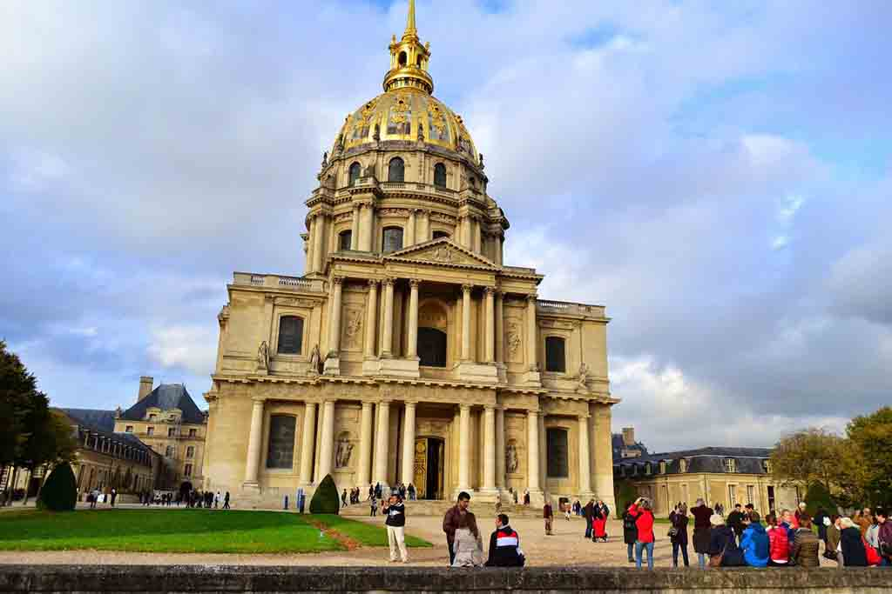
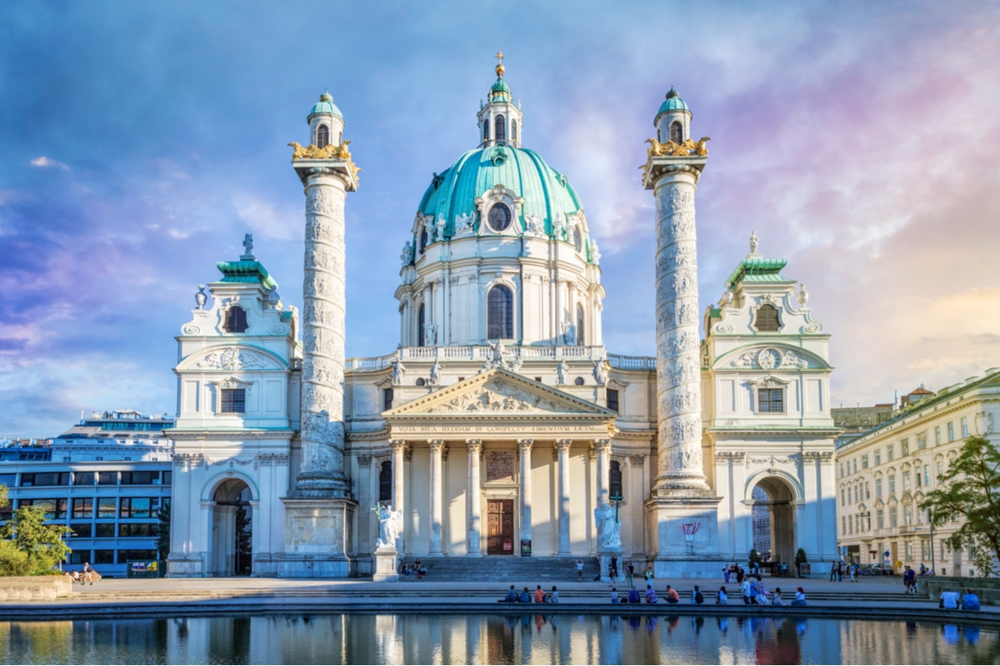
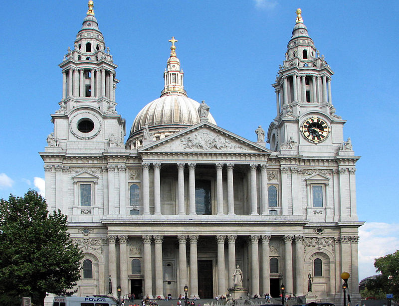

Cladiri in stil baroc
Les Invalides

Karlskirsche

St Paul's Cathedral

Catedrala din Santiago de Compostola

Arhitectura barocă este un stil arhitectural predominant al secolelor al XVII-lea și al XVIII-lea, a derivat din renașterea manieristă și a evoluat ulterior în rococo, având o ultimă "zvâcnire" de orgoliu ca neo-baroc, înainte ca neoclasicismul să îl eclipseze aproape în totalitate. A mai cunoscut o renaștere târzie, la sfârșitul secolului al XIX-lea în Banat, Transilvania și Rusia.
Teatral și exuberant, barocul a exprimat triumful statului și al bisericii, dar și al burgheziei seculare. Formele convexe și concave, iluziile optice, elipse intersectate în planuri care erau de cele mai multe ori extensii ale tipului centralizat, geometrii complicate și relații între volume de tipuri și mărimi diferite, exagerare emfatică, culori îndrăznețe și multă retorică arhitecturală și simbolică sunt caracteristicile stilului baroc.
Barocul în arhitectură a fost rezultatul doctrinelor adoptate de Biserica Catolică la Conciliul Tridentin în 1545–1563, ca răspuns la Reforma Protestantă. Prima fază a Contrareformei impunea un stil academic sever asupra arhitecturii religioase, care apelase la intelectuali, dar nu la masa credincioșilor. Conciliul Tridentin a decis în schimb să apeleze la un public mai popular și a declarat că artele ar trebui să comunice teme religioase cu implicare directă și emoțională. Arta barocă luterană s-a dezvoltat ca un semn al identității, ca răspuns la beeldenstorm al calviniștilor.
Bisericile baroce sunt proiectate cu un spațiu central mare, unde credincioșii ar putea să fie aproape de altar, cu o cupolă ridicată, permițând luminii să lumineze biserica de dedesubt. Cupola e una dintre trăsăturile simbolice centrale ale arhitecturii baroce care ilustrează unirea dintre ceruri și pământ, interiorul cupolei fiind decorat generos cu picturi cu îngeri și sfinți și cu statuete de stuc cu îngeri, dând impresia celor de mai jos că se uită spre rai. O altă trăsătură a bisericilor baroce este quadratura; picturi trompe-l'œil pe tavan înconjurate de stucaturi, fie reale, fie pictate, aglomerate cu picturi cu sfinți și îngeri și conectate prin detalii arhitecturale cu balustrade și console. Picturile quadratura cu atlanți sub cornișe par să susțină tavanul bisericii. Spre deosebire de plafoanele pictate ale lui Michelangelo din Capela Sixtină, care au combinat diferite scene, fiecare cu propria perspectivă, ca să fie privite pe rând, picturile baroce de pe tavane sunt create cu atenție, astfel încât privitorul de pe podeaua bisericii să vadă întregul tavan în perspectivă corectă, ca și cum figurile ar fi reale.
Interioarele bisericilor baroce deveneau din ce în ce mai ornamentate în anumite perioade și se concentrau în jurul altarului, de obicei așezat sub cupolă. Unele dintre cele mai cunoscute opere decorative baroce sunt Scaunul Sfântului Petru (1647–53) și Baldachinul Sfântului Petru (1623–34), ambele de Gian Lorenzo Bernini, în Bazilica Sfântul Petru din Roma. Baldachinul Sfântului Petru este un exemplu al echilibrului contrariilor în arta barocă; proporțiile gigantice ale operei, cu ușurința aparentă a baldachinului; și contrastul dintre coloanele răsucite solide, bronzul, aurul și marmura operei cu draperiile curgătoare ale îngerilor de pe baldachin. Frauenkirche din Dresda servește ca un exemplu important al artei baroce luterane, care a fost finalizată în 1743 după ce a fost comandată de consiliul luteran al orașului Dresda și a fost „comparată de observatorii din secolul al XVIII-lea cu Sfântul Petru din Roma”.
Coloanele răsucite din interiorul bisericilor sunt una dintre principalele trăsăturile ale barocului. Oferă atât un sentiment de mișcare, cât și un mod dramatic de a reflecta lumina. Cartușul e un alt ornament caracteristic ornamentării baroce. Acestea erau plăci mari sculptate din marmură sau piatră, de obicei ovale și cu o suprafață rotunjită, care conținea imagini sau text cu litere aurite și erau așezate ca decorațiuni interioare sau deasupra ușilor clădirilor, transmițând mesaje celor de mai jos. Au avut o mare varietate de versiuni de-a lungul timpului și au fost găsite în toate tipurile de clădiri, de la catedrale și palate până la capele mici.
Arhitecții baroc foloseau uneori perspectiva forțată ca să creeze iluzii. Pentru Palatul Spada din Roma, Borromini a folosit coloane cu dimensiuni în scădere, o podea de îngustare și statuie în miniatură din grădina de dincolo ca să creeze iluzia că un pasaj avea o lungime de 30 de metri, când avea de fapt doar șapte metri lungime. O statuie de la sfârșitul pasajului pare să aibă dimensiuni naturale, chiar dacă are doar 60 de centimetri înălțime. Borromini a proiectat iluzia cu ajutorul unui matematician.